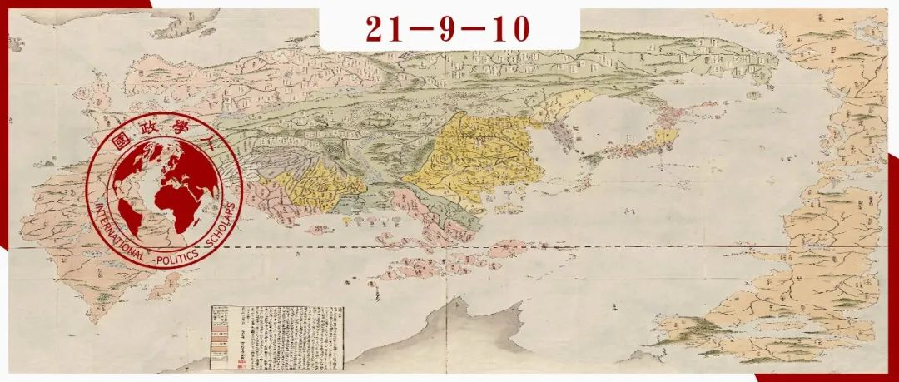

收录于合集 #区域国别 9个

作品简介
作者： 佐佐木雄一（SASAKI Yuichi），东京大学法学博士，明治学院大学法学部专任讲师。他的研究兴趣包括日本政治外交史、近代日本外交和国际社会、战前战后的日本首相和内阁等，著有《帝国日本的外交1894-1922：为何要扩张版图？》和《陆奥宗光》等书。
编译： 徐一凡（国政学人编译员，立命馆大学国际关系学院）
来源： Sasaki, Yuichi. Reception and practice of diplomacy in modern Japan: power, interests, and norms, International Relations of the Asia-Pacific , 00(2021): 1-28. doi: 10.1093/irap/lcab015
归档： 《国际关系前沿》2021年第9期，总第36期。

内容提要
本文重新探究了近代日本如何加入国际社会（international society），特别是日本起主导作用的外交官（leading Japanese diplomats）在其中发挥的作用。明治时期的日本领导人对国际社会和外交的认识往往被解读为是一种权力政治的零和思维，是一种帝国主义体系中的现实主义政策的体现。然而，本文认为，日本在1890年代及其后的一段时间里的外交是由利益导向且非零和的思维指导的，而且这种思维与当时的国际秩序密不可分。日本起主导作用的外交官从对西方国家的外交中学习经验，并且充分理解军事力量与国际规范两者的重要性，并在国际社会的规则与规范之中寻求日本的国家利益。本文指出了理解近代日本外交原则，日本帝国主义扩张，和国际社会中规范传播的过程的新角度。
01
导读
本文将探究日本起主导作用的外交官如何解读国际关系地基本准则，特别是外交的本质，以及如何在实践中应用这些知识的。学界通常认为战前日本采取的是“战士”（warrior）型外交政策，认为外交只是“另一种形式的战争”（war by other means），还认为“谈判的目的是胜利，而没取得完全的胜利就是失败”。与之相反，本文认为日本外交是“商人”型（mercantile）的，基于“与对手的妥协比彻底摧毁对手更有利”这一前提。虽然日本外交官理解国际关系中军事实力的重要性，但他们并不认为这只是一个充满冲突和不稳定的权力政治的世界，而是认为基于共同利益、规则和规范的秩序确实存在于国际社会之中。
日本的对外政策基本是由起主导作用的外交官指定和执行的。其中代表人物包括西德十郎（1847-1912）、林董（1850-1913）、小村寿太郎（1855-1911）等人。他们是一个职业外交官群体，职位常常在外务大臣和驻外公使间轮换。此外，1890年代到1930年的日本对外决策机制是相当中心化的，这就给了职业外交官群体相当大的决策和执行权。因此，本文将通过研究日本起主导作用的外交官处理对外事务的逻辑，本文对理解这一时期日本外交提供了新角度。
02
修约
在中日甲午战争之前，日本最大的外交任务是修改与西方国家签订的条约。其主要目标是，在建立近代政治和法律制度的同时，恢复日本国的法权。尽管朝野内外有不同声音，但日本外交官坚持认为，与其他文明国家交往，必须要保证其他国家利益，而不能单方面做出决定。伊藤博文内阁的外务大臣陆奥宗光认为，“国际社会就像我们的社会一样，设身处地地想，如果我们在站在其他国家地立场上不能接受某些条款，那我们当然也不可能说服他们接受”。
陆奥想和西方国家签订“平等”条约，但至于平等与否，这首先是一个表述问题，而非事实问题。之前的外务大臣都提出修约的方向是取得“更好”的条款，而陆奥则明确修约的目标是“平等条约”。而平等条约的能实质上带来什么改变，就是另一个问题了。其次，陆奥试图通过做出让步来让各国利益都能得到妥善安排，达到公平的结果。尽管修约过程中，外交官群体中会有不同意见，但整体上他们都认同在国际规范中达到互利的重要性。
03
三国干涉的影响：强权即公理？
在中日甲午战争之后，中国将辽东半岛和台湾及其附属岛屿割让给了日本。但在战争结束后不久（1895年），俄、法、德三国就介入其中并要求日本放弃辽东半岛。这似乎给包括陆奥宗光在内的日本外交官群体创造了一种“强权即公理”（might makes right）的印象。但是，这只是当时的外交官群体为外交失败寻找的借口而已。陆奥认为，以保护朝鲜为借口要求割让辽东半岛是正当的要求，试图通过外交手段避免其他国家对中日和谈的干涉，但最终失败。包括陆奥在内的明治时期领导人无疑都认识到军事实力在国际关系中的重要性，因此他们对于三国干涉还辽并不感到意外。陆奥甚至在翌年发表了一篇文章，表示虽然军事实力很重要，但却并不是国际关系的全部；其中的道德原则虽然不完美，但也却并不是完全不存在。这是当时日本外交官群体的普遍看法。陆奥既不认为俄国是完全以军事实力为依托追求扩张政策，也不认为日本应该寻求与英国同盟来制衡俄国。认识到国际关系中军事实力的重要性是一回事，而认为其是唯一要素就是另一回事了。
04
日俄协约
在中日甲午战争之后，许多声音认为日本应该和列强结成同盟，指出日本不可能单独在紧张的国际情势中独善其身，而必须与英国或俄国结盟以求自保。在这一问题上，外务大臣陆奥宗光和驻俄公使西德十郎起了关键作用。陆奥通常被视为亲英派，但当时陆奥其实更倾向于采取不结盟政策。西德十郎也认为，日本目前对西方国家并不是那么重要，而缺乏共同目标和利益的同盟是不会长久的。同时，俄国也表示，缔结同盟的前提是将朝鲜交予俄国控制，同样不符合日本利益。所以，最终日本和俄国缔结了协约，而非盟约，作为一种不结盟政策。日本内阁也做出决议，如果俄国真的打破现状挺进朝鲜，日本也不会寻求与俄国的冲突。同时，在驻英公使加藤高明的建议下，日本也寻求和英国建立友好关系。可以看到，当指定对俄政策时，陆奥宗光和西德十郎更加注重的是各方的利益，而非无限制的扩张，并且批判日本当时过分担忧俄国的倾向。他们相信可以通过某种方式和俄国达成妥协，并在未来数年内维持地区稳定。
05
瓜分中国 和罗森-西协定
德国于1897年攫取胶州湾，所谓瓜分中国的狂潮开始了。俄国意图将实力扩展到辽东半岛，并向日本提出重新商讨朝鲜问题。俄国许诺给日本在朝鲜的工商特权，但时任日本外务大臣西德十郎则回应，除非俄国完全放弃在朝特权，否则谈判将很难进行。日本外交官群体认为，这是一个攫取对朝特权的窗口期。随着1898年的一系列动乱，俄国决定从朝鲜撤出顾问和军事教官，日本势力则仍然留在朝鲜。同时，西德十郎对俄国表示，如果俄国能接受这一点，那么作为回报，日本政府可以考虑不将满洲作为日本的利益和关切范围。
要注意的是，日本正是因为俄、法、德三国干涉才被迫将辽东半岛还给中国的。现在，俄国将辽东纳入自己势力范围的做法不可避免地会激怒许多日本人。即便如此，日本起主导作用的外交官既没有做任何抗议，也没有试图和俄国的对手英国拉近关系。他们认为，和俄国达成一个双方都满意的协议是可能的，实际上他们也做到了。他们相信，日本在朝鲜获得的利益和俄国在满洲获得的利益大体是差不多的，既能避免面冲突，又能满足双方的需求。这也是一条现实又合理的在国际关系的规则和规范之内追求日本利益的道路。
06
通往日俄战争之路
如上所述，日本外交官群体认为俄国向包括辽东在内的满洲地区扩张是很自然的，并且已经预见到满洲全境也会不可避免地处于俄国控制之下。然而，1900年的义和团运动导致俄国大举进犯并占领满洲，让日本感受到了俄国对其势力范围朝鲜甚至是日本本土的威胁。同时，中国的门户开放，领土完整，和正在成型的日、英、德同盟愿景也让日本对俄国德敌意逐渐增长。
1890年代的日本外交官群体认为，日俄两国能够在朝鲜和满洲问题上找到双方都能满足的平衡点。彼时，他们并没有零和思维，比起国家安全，更加关注于国家利益。但到1901时，这一立场便站不住脚了。随着俄国完全占领满洲并大举驻军，日本感受到了其国家安全正受到威胁。如果说在1890年代日本外交官群体还能找到一个双方都能满意的解决方法，那么在俄国完全占领满洲之后的1901年，日本外交官发现现在已经找不到一个可行的妥协之策了。因此，日本外交自此变得由权力政治和零和思维指导，使得事态朝着1904年日俄战争的爆发发展。
07
****结论
日本起主导作用的外交官在1890年代及之后的一段时间内都是在国际社会的规则和规范之内追求国家利益的。“利益”意味着互利和妥协，并非独指日本的本国利益。利益被认为是确保国际关系稳定之“缓冲”。日本外交官完全理解军事力量并非国际关系之全部。日本在这一时期的对外政策也反映了这一点。比如，在瓜分中国狂潮中，日本外交官设法使俄国承认日本对朝鲜的控制，作为俄国向辽东半岛挺进的交换。他们认为这是“公平”的交易。而这也从另一个侧面体现了日本帝国主义扩张的机制。这些外交官通常会尝试在最大程度上保障国家利益，无论通过何种方式。只要他们认为是正当的，他们也会毫不犹豫地采取军事手段进行领土扩张。而这一切也都是在正当和公平地旗帜下进行的。
译者评述
译者希望从两个方面讨论这篇文章，学理上的，和政策借鉴方面的。
学理上，译者主要想讨论的是实证研究中，历史事实、微观理论和宏观理论之间的关系。本文作者开篇就辩驳将近代日本从一开始就视为进攻性国家的观点，认为对外交政策起主导性的外交官群体并非从一开始就完全以权力政治的零和思维行事，而是以非零和的利益导向思维制定并执行对外政策的。作者的研究之意义在于，描绘了一幅动态且能动的日本对外政策演变图景；指出日本对外政策不是从一开始就是一成不变完全有意识地朝着某一个确定的方向发展的，而是在多种因素的合力下发展，且时常偏离政策制定者之初衷的。
总的来说，这是在微观层面上对这一时期日本外交的细致划分，而且这一细分的时间段也是限制于1900年代以前。同时，作者也并不反对，在1900年代日俄关系恶化后，日本也确实走上了总体对外扩张的道路。从宏观的角度讲，“战前近代日本对外政策是进攻性的”，这一命题并不错误。宏观/总体理论，特别是像结构现实主义和制度自由主义这样的结构性理论的优势本来就不在于判断细节，而是在于总结和预测事态的总体性发展，其周期往往是以十年、二十年甚至更长的周期记，其中出现波动也实属正常。所以，如果把眼光拉到19世纪中叶到20世纪中叶这百年间的宏观上，此期间日本的对外政策确实是随着实力的增长逐渐走上全面对外扩张的道路的。
实证科学都是从经验出发的。从历史事实的来看，“一小段时间内主导日本对外政策的外交官群体并无权力政治的零和思维”和“长期看战前日本对外政策的总基调是进攻性的”两个命题都为真。也就是说，微观和宏观理论都有其合理性，虽然有时会出现矛盾，但究其根源可能是看待事物的角度不同导致的，不应该轻易相互否认。
上述讨论虽然看上去只是学理性的，但对现实政策却有着不可小觑的意义。译者认为，当今中国外交面临的许多困难就与这种微观理解和宏观理解的差距有关。中国往往认为自己在外交上人畜无害，但美国一些专家和政策制定者却总觉得这是笑里藏刀。反过来也是一样，美国释放善意的信号有时也会被中国解读为居心叵测。可能双方都觉得很委屈，但这种误解往往是被命定论般的“XX决定论”造成的。比如，一旦我们相信“帝国主义亡我之心不死”，那么美国做出的一切善举也都只是烟雾弹或是糖衣炮弹而已，反之亦然。然而，以战前日本外交为例，总体的进攻性和部分的妥协性合作性并不矛盾，如果片面的以总体性结论为基础认为日本这一时期内所有的外交行为都是进攻性的，那就有失偏颇。
我们今天面临的一个大问题就是“XX决定论”有成为自我实现的预言的风险。如果帝国主义真的亡我之心不死，那么即便把善意当成军心叵测也无伤大雅。但问题是，人类没有上帝视角，如何判断什么是宏观的趋势，而哪些又只是微观的偏离呢？进步/反动之划分都是后见之明，又有哪些反动分子会认为自己反动呢？反动的人往往也会认为历史是站在自己一边，反而认为那些“进步”才是历史的插曲。法国革命时期，俄国几乎是欧洲最保守的国家，军队甚至由农奴组成；而法国则是最先进的国家，是启蒙、革命的起源。但当俄国沙皇亚历山大骑着白马踏入巴黎时，又有几个人能分清到底什么才是历史大势呢？
如果单纯认为对方是笑里藏刀或者居心叵测，那么善意也会被当成恶意，本可避免的冲突也会成为现实。如何避免曲解和被曲解可能是当下世界政治，尤其是大国政治的重要课题。如果修昔底德陷阱真的是所谓大势所趋，那恐怕谁也无能为力，我们想要避免也避免不了。但同时，译者认为更重要的是一定不能跌入自己给自己挖的修昔底德陷阱，那就无异于自掘坟墓了。日本和俄国最终走向日俄战争，是一个动态的过程，是行为体能动的表现，也是日俄两国互动的结果。历史不能假设，我们不知道如果日俄没有迈出第一步还会不会发展到现在的结果；但可以肯定的是，如果他们从一开始就认为两国间“必有一战”，那么就必然会发展到这一步。毕竟，日本以善意始都落得这个结果，若是以恶意始就更是如此了。
词汇积累
另一种形式的战争，被一部分人用来形容外交 War by other means
强权即公理 Might makes right
责编 | 徐一凡 姚寰宇
排版 | 王慧瑜 邱意雯
文章观点不代表本平台观点，本平台评译分享的文章均出于专业学习之用, 不以任何盈利为目的，内容主要呈现对原文的介绍，原文内容请通过各高校购买的数据库自行下载。

国政学人
支持学术公益与知识传播
微信扫一扫赞赏作者 __赞赏
已喜欢，对作者说句悄悄话
取消 __
发送给作者
发送
最多40字，当前共字
上一页 1/3 下一页
长按二维码向我转账
支持学术公益与知识传播
受苹果公司新规定影响，微信 iOS 版的赞赏功能被关闭，可通过二维码转账支持公众号。